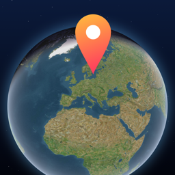

Geodash
Guess places from Look Around · Rate Orte aus aller Welt
Jeden Tag ein neuer Ort. Umschauen, Nadel setzen, Freunde schlagen. · A new place every day. Look around, drop your pin, beat your friends.
Käufe wiederherstellen · Restore purchases
Öffne die Pro-Seite in der App und tippe auf „Käufe wiederherstellen“. · Open the Pro screen in the app and tap “Restore purchases”.
Abo kündigen · Cancel a subscription
Einstellungen → dein Name → Abonnements → Geodash. Kündige mindestens 24 Stunden vor Ablauf. · Settings → your name → Subscriptions → Geodash. Cancel at least 24 hours before renewal.
Deine Daten · Your data
Es gibt kein Konto. Spielstände, Serien und Statistik liegen auf deinem Gerät. Ranglisten laufen über Apples Game Center, wenn du angemeldet bist. Die Umsehen-Bilder lädt Apple Karten. · There is no account. Game progress, streaks and stats are stored on your device. Leaderboards use Apple's Game Center if you're signed in. Look Around imagery is loaded by Apple Maps.
Kontakt · Contact
Fragen, Fehler, Ideen: timon.duodu@icloud.com – Antwort meist innert 48 Stunden. · Questions, bugs, ideas – usually answered within 48 hours.